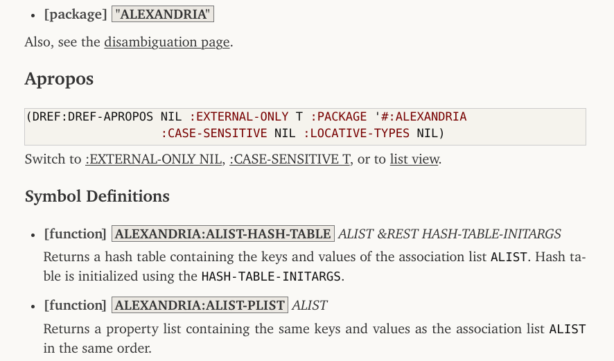

Try in Emacs
Tags: tech, lisp, Date: 2023-08-14
Try, my test anti-framework, has just got light Emacs integration. Consider the following test:
(deftest test-foo ()
(is (equal "xxx" 5))
(is (equal 7 7))
(with-failure-expected (t)
(is (same-set-p '(1) '(2)))))The test can be run from Lisp with (test-foo) (interactive
debugging) or (try 'test-foo) (non-interactive), but now there is
a third option: run it from Emacs and get a couple of conveniences
in return. In particular, with M-x mgl-try then entering
test-foo, a new buffer pops up with the test output, which is
font-locked based on the type of the outcome. The buffer also has
outline minor mode, which matches the hierarchical structure of the
output.
 The buffer's major mode is
Lisp, so
The buffer's major mode is
Lisp, so M-. and all the usual key bindings work. In additition,
a couple of keys bound to navigation commands are available. See the
documentation
for the details. Note that Quicklisp has an older version of Try
that does not have Emacs integration, so you'll need to use
https://github.com/melisgl/try
until the next Quicklisp release.
DRef and PAX v0.3
Tags: tech, lisp, Date: 2023-07-26
DEFSECTION needs to refer to definitions that do not create a
first-class object (e.g. stuff like (*DOCUMENT-LINK-TO-HYPERSPEC*
VARIABLE)), and since its original release in 2014, a substantial
part of
PAX dealt
with locatives and references, which reify definitions. This release
finally factors that code out into a library called
DRef,
allowing PAX to focus on documentation. Being very young, DRef lives
under adult supervision, in a
subdirectory
of the PAX repository.
DREF> (definitions 'pax:document-object*)
(#<DREF DOCUMENT-OBJECT* GENERIC-FUNCTION>
#<DREF DOCUMENT-OBJECT* (METHOD NIL (MGL-PAX-BLOG::CATEGORY T))>
#<DREF DOCUMENT-OBJECT* (METHOD NIL (UNKNOWN-DREF T))>
#<DREF DOCUMENT-OBJECT* (METHOD NIL (MGL-PAX::CLHS-DREF T))>
#<DREF DOCUMENT-OBJECT* (METHOD NIL (MGL-PAX::INCLUDE-DREF T))>
#<DREF DOCUMENT-OBJECT* (METHOD NIL (MGL-PAX::GO-DREF T))>
#<DREF DOCUMENT-OBJECT* (METHOD NIL (GLOSSARY-TERM T))>
#<DREF DOCUMENT-OBJECT* (METHOD NIL (SECTION T))>
#<DREF DOCUMENT-OBJECT* (METHOD NIL (ASDF-SYSTEM-DREF T))>
#<DREF DOCUMENT-OBJECT* (METHOD NIL (CLASS-DREF T))>
#<DREF DOCUMENT-OBJECT* (METHOD NIL (STRUCTURE-ACCESSOR-DREF T))>
#<DREF DOCUMENT-OBJECT* (METHOD NIL (WRITER-DREF T))>
#<DREF DOCUMENT-OBJECT* (METHOD NIL (READER-DREF T))>
#<DREF DOCUMENT-OBJECT* (METHOD NIL (ACCESSOR-DREF T))>
#<DREF DOCUMENT-OBJECT* (METHOD NIL (METHOD-DREF T))>
#<DREF DOCUMENT-OBJECT* (METHOD NIL (SETF-DREF T))>
#<DREF DOCUMENT-OBJECT* (METHOD NIL (VARIABLE-DREF T))>
#<DREF DOCUMENT-OBJECT* (METHOD NIL (DREF T))>
#<DREF DOCUMENT-OBJECT* (METHOD NIL (T T))>)
DREF> (dref 'pax:document-object* '(method nil (class-dref t)))
#<DREF DOCUMENT-OBJECT* (METHOD NIL (CLASS-DREF T))>
DREF> (arglist *)
(DREF STREAM)
:ORDINARY
DREF> (docstring **)
"For definitions with a CLASS locative, the arglist printed is the
list of immediate superclasses with STANDARD-OBJECT, CONDITION and
non-exported symbols omitted."
DREF> (pax:document ***)
- [method] DOCUMENT-OBJECT* (DREF CLASS-DREF) STREAM
For definitions with a CLASS locative, the arglist printed is the
list of immediate superclasses with STANDARD-OBJECT, CONDITION and
non-exported symbols omitted.During the refactoring, the references API was cleaned up. How to write extensions has seen lots of changes (see Extending DRef and Extending PAX), but normal use is the same. DRef is similar to Shinmera's Definitions library but is more tailored to the needs of PAX.
Also in this release:
Apropos got a detailed view feature, which includes the docstrings of all listed definitions not just the reference itself. This is very useful for getting an overview of a package.

The detailed view often has to render docstrings which have not been written with PAX in mind and are not proper markdown. These docstrings are now sanitized aggressively in a unavoidably heuristic manner.
There are now two supported CSS styles for HTML output:
:DEFAULTwithsans-serif, and:CHARTERwith Charter as the main font (which is bundled). The:CHARTERstyle is used in the linked PAX World documentation on this blog. See PAX:*BROWSE-HTML-STYLE* and PAX:UPDATE-ASDF-SYSTEM-HTML-DOCS.As usual, quite a few bug fixes and some optimizations also found their way into this release.
PAX Live Documentation Browser
Tags: tech, lisp, Date: 2023-06-10
PAX got a live documentation browser to make documentation generation a more interactive experience. A great thing about Lisp development is changing a single function and quickly seeing how it behaves without the delay of a full recompile. Previously, editing a docstring required regenerating the full documentation to see how the changes turned out. The live documentation browser does away with this step, which tightens the edit/document loop.
PAX also got an apropos browser. It could always generate documentation for stuff not written with PAX in mind, so with the live browser already implemented, this was a just a small add-on.
The trouble with interactivity is, of course, that it's difficult to get the point across in text, so I made two short videos that demonstrate the basics.
Grid Typesetting
Tags: tech, Date: 2023-04-17
I put the sources of the Two-Tailed Averaging paper on github. Of course, the sources are also available on arxiv, but this may give better visibility to the LaTeX grid typesetting code in there. Also, note how much cleaner the paper looks with the XCharter font compared to Times New Roman. No wonder Matthew Butterick pushes Charter. By the way, see what he has to say about grids and baseline grids, in particular.
Normalize Fonts for Comparison
Tags: tech, Date: 2023-04-10
In short, comparing fonts at the same font size is almost never the right thing to do. Compare them at the same x-height or, better yet, at the same space usage.
In full, recently I wanted to choose a font that looks good on
screen at various resolutions and also in print. This is fairly
subjective, of course, so there is a lot of noise out there. Going
by the LaTeX Font Catalogue,
Google Fonts, and similar font
comparison sites turned out to be fairly misleading because they
present fonts at the same font
size (em in LaTeX
and CSS). The problem is that 1em is the size of a bounding box
for the largest character, which can be arbitrarily loose. The
perceived size of typical English text is much more closely
determined by the
x-height (ex in LaTeX
and CSS). 1ex is the height of the character x, which is pretty
close to the height of other lowercase characters for most fonts.

... read the rest of Normalize Fonts for Comparison.
Migration to Github
Tags: tech, Date: 2014-09-25
Due to the bash security hole that keeps giving, I had to disable gitweb at http://quotenil.com/git/ and move all non-obsolete code over to github. This affects:
Hung Connections
Tags: tech, Date: 2011-02-27
My ISP replaced a Thomson modem with a Cisco EPC3925 modem-router to fix the speed issue I was having. The good news is that the connection operates near its advertised bandwidth, the bad news is that tcp connections started to hang. It didn't take long to find out that this particular router drops "unused" tcp connections after five minutes.
... read the rest of Hung Connections.
OfflineIMAP with Encrypted Authinfo
Tags: tech, Date: 2011-02-26
I've moved to an OfflineIMAP +
Gnus setup that's outlined at
various
places.
Gnus can be configured to use
~/.authinfo as a
netrc style of file to read passwords from and can easily use
encrypted
authinfo
files as well. Offlineimap, on the other hand, offers no such
support, and passwords to the local and remote imap accounts are
normally stored in clear text in .offlineimaprc.
... read the rest of OfflineIMAP with Encrypted Authinfo.
Upgrade Woes 2
Tags: tech, Date: 2010-02-08
Debian Squeeze finally got Xorg 7.5 instead of the old and dusty 7.4. The upgrade was as smooth as ever: DPI is off, keyboard repeat for the Caps Lock key does not survive suspend/resume and the trackpoint stopped working. Synaptics click by tapping went away before the upgrade so that doesn't count.
Upgrade Woes
Tags: tech, Date: 2009-11-06
Debian Lenny was released back in February. My conservativeness only lasts about half a year, so I decided to upgrade to Squeeze aka Debian testing. The upgrade itself went rather smoothly with a few notable exceptions. With KDE 4.3, I should have waited more.
... read the rest of Upgrade Woes.
Space Cadet
Tags: lisp, tech, Date: 2008-12-15
Emacs users often report problems caused by strain on the pinky finger, which is used to press the Control key. The standard answer to that is to map Caps Lock to Control. I believe that there is a better way:

Note the placement of modifiers: Control, Meta, Super, Hyper on both sides of Space in this order, with Control being the closest to it. Touch typers especially find having two of each key absolutely essential, and the symmetric placement appeals to me.
... read the rest of Space Cadet.
Backup
Tags: tech, Date: 2008-03-28
My carefully updated list of files to back up had grown so long that it made me worry about losing something important, and the backup didn't fit on a single DVD, so I invested in a WD Passport and created an encrypted file system on it:
modprobe cryptoloop
modprobe aes
losetup -e aes /dev/loop0 /dev/sdb
mke2fs /dev/loop0
tune2fs -i 0 -c 0 -j /dev/loop0
... read the rest of Backup.
First Post
Tags: personal, tech, Date: 2008-02-01
After a long time of waiting to write my own blog software like true hackers with infinite time do (and those irritated by Wordpress), I bit the bullet and installed blorg – a very low overhead emacs blog engine – on top of org-mode, that I happen to use as an organizer. Blorg basically converts an org mode buffer to html files, so it is completely static: send me email if you have comments, I have no desire to maintain a more complex solution with comment filtering.
Small fixes had to be made for blorg to be able to deal with org-mode 5.17a, and I only had time to bring it to some basic level of functionality. That said, here is the blorg-init.el file I'm using right now.
2020-05-03: Since then, this blog has been moved to MGL-PAX.